原文连接:https://www.cnblogs.com/eknown/p/12032322.html
本节介绍SpringBoot创建第一个示例SSM项目的完整过程，使用工具STS，与IDEA操作基本类似。
示例代码在：https://github.com/laolunsi/spring-boot-examples
前言
根据几位网友反馈的结果，重新编辑了这篇文章。此篇文章先从环境配置开始，然后到项目创建，最后讲述SSM框架整合，展现一个完整SpringBoot项目创建与使用的过程。
基于maven搭建直接SSM或者SSH框架的麻烦之处，被各种配置文件（尤其是xml）折磨的在座各位应该深有体会。而SpringBoot的出现正好解决了这个问题，抛弃各种繁琐的配置，我们只需要一个application.properties文件就可以解决这些问题。
下面进入正题。
一、环境搭建
首先下载一个专为Spring设计的eclipse版本——Spring Tool Suite，简称STS。它是Eclipse的一个特殊版本，界面和操作与Eclipse都非常类似，下载zip包可以直接运行。
注：IDEA和STS创建springboot项目的步骤和界面是完全一样的。创建的项目结构也相近，sts创建的项目可以直接导入IDEA使用。
先看一下界面：
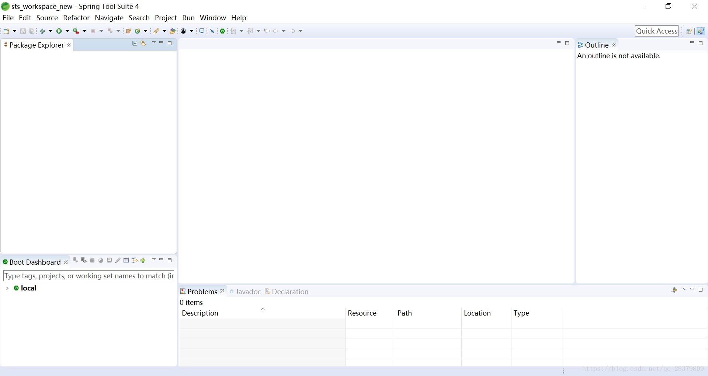
二、创建SpringBoot项目
解压压缩包后运行下面的exe文件（上面有绿色图标的），然后你会看到上面的界面。
然后点击左上角，File——new——Spring Starter Project。下面是详细步骤：
第一步，new——>Spring Starter Project.
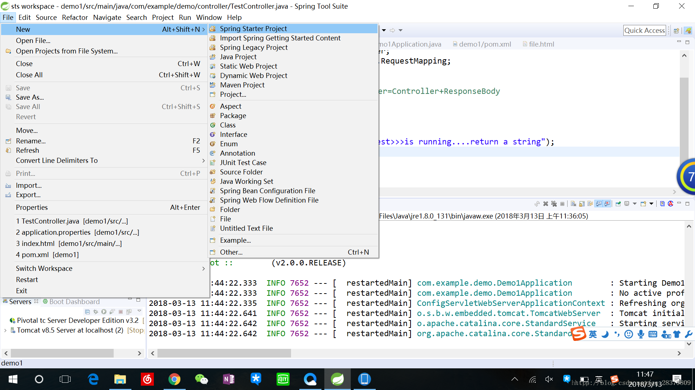
接着，name填入项目名称，group随意，其他的不用管，这里的service URL指Spring boot官网地址。
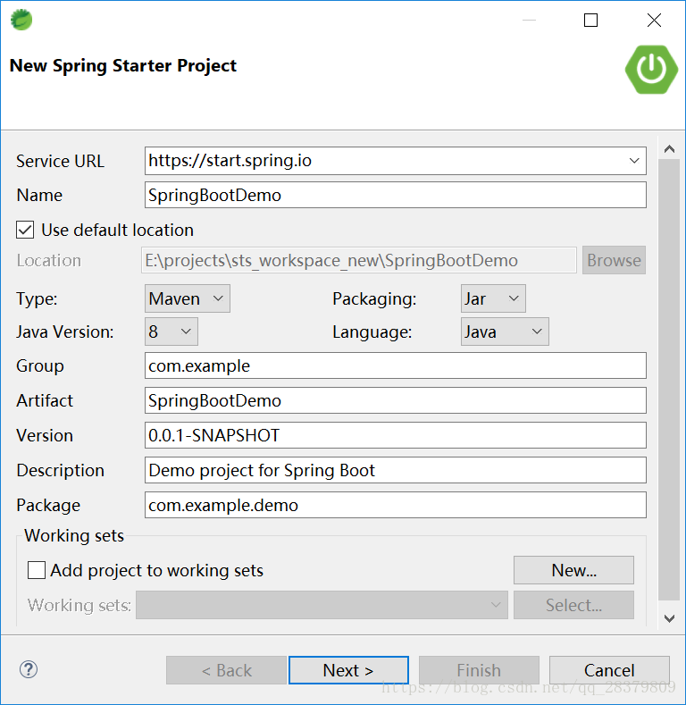
然后，version默认选择，Available中输入查找，选中以下五项：Web、DevTools、MySQL、Mybatis、Thymeleaf。
（注：这里的环境可以先不选，之后根据需要在maven的依赖配置文件pom.xml中添加即可。我这里先行加上，等会儿一一介绍用途）。
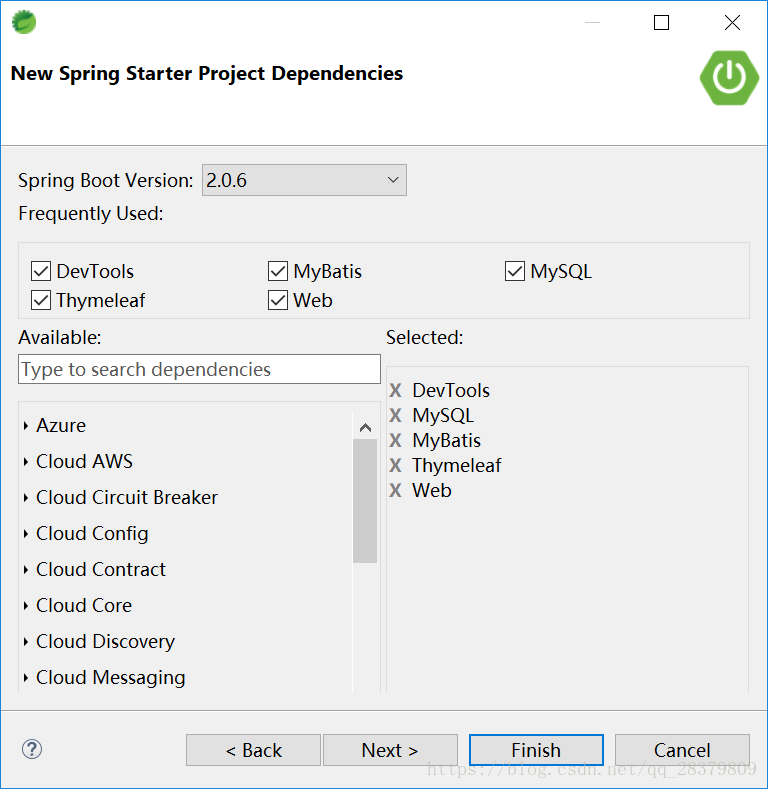
最后点击next/finish均可，等待一会儿，项目创建完毕，目录如下：
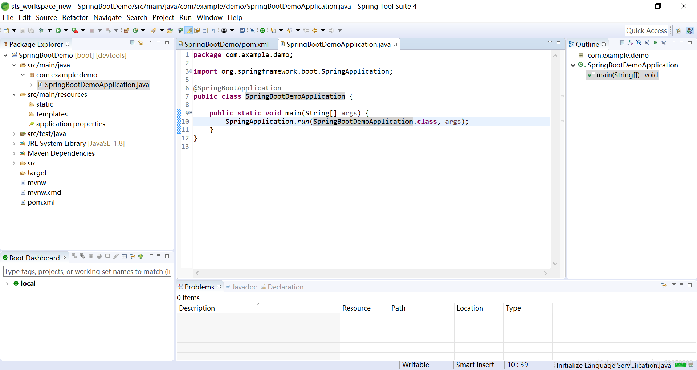
注：如果resources下的static或者templates文件夹不存在的话，不用着急，这个是因为我上面选择了那些依赖才创建的，后面手动加一下也没关系。
三、项目启动
到目前为止，SpringBoot项目已经创建完毕了。
我们可以看到启动类SpringBootDemoApplication.java这个类。
package com.example.demo;
import org.springframework.boot.SpringApplication;
import org.springframework.boot.autoconfigure.SpringBootApplication;
@SpringBootApplication
public class SpringBootDemoApplication {
public static void main(String[] args) {
SpringApplication.run(SpringBootDemoApplication.class, args);
}
}这个类是干嘛的呢？
我们看到其中有main方法。
没错，SpringBoot项目就是使用这个类启动的，右击这个类，run as——Spring Boot App，项目就会启动。
这里有一个误区：为什么按照我这里步骤创建会报错。
这是由于我之前选择添加了Web等依赖，此时项目是无法直接执行的——看控制台日志就能看出是数据库没有配置的原因。而如果我没有添加这些依赖，直接运行SpringBootWebApplication.java文件，就可以启动项目了。
下面，我们讲解一下环境配置的问题——配置完成后就可以运行这个空的SSM项目了哦。
四、环境配置
4.1 maven之pom.xml
为什么要先讲maven呢？
因为我之前说SSM——Spring+SpringMVC+Mybatis项目。这个应该是大家比较感兴趣的——目前企业里这一类项目大多数都是SSM框架了。以前很火的SSH现在被使用的并不多。说个盘外话，SSH真的坑。
看一下我的pom.xml，如果依赖添加不对的话请对照一下：
<?xml version="1.0" encoding="UTF-8"?>
<project xmlns="http://maven.apache.org/POM/4.0.0" xmlns:xsi="http://www.w3.org/2001/XMLSchema-instance"
xsi:schemaLocation="http://maven.apache.org/POM/4.0.0 http://maven.apache.org/xsd/maven-4.0.0.xsd">
<modelVersion>4.0.0</modelVersion>
<groupId>com.example</groupId>
<artifactId>SpringBootDemo</artifactId>
<version>0.0.1-SNAPSHOT</version>
<packaging>jar</packaging>
<name>SpringBootDemo</name>
<description>Demo project for Spring Boot</description>
<parent>
<groupId>org.springframework.boot</groupId>
<artifactId>spring-boot-starter-parent</artifactId>
<version>2.0.6.RELEASE</version>
<relativePath/> <!-- lookup parent from repository -->
</parent>
<properties>
<project.build.sourceEncoding>UTF-8</project.build.sourceEncoding>
<project.reporting.outputEncoding>UTF-8</project.reporting.outputEncoding>
<java.version>1.8</java.version>
</properties>
<dependencies>
<!-- springboot推荐的模板引擎，要想映射HTML/JSP，必须引入thymeleaf -->
<dependency>
<groupId>org.springframework.boot</groupId>
<artifactId>spring-boot-starter-thymeleaf</artifactId>
</dependency>
<dependency>
<groupId>org.springframework.boot</groupId>
<artifactId>spring-boot-starter-web</artifactId>
</dependency>
<!-- mybatis -->
<dependency>
<groupId>org.mybatis.spring.boot</groupId>
<artifactId>mybatis-spring-boot-starter</artifactId>
<version>1.3.2</version>
</dependency>
<!-- 热部署用，改变代码不需要重启项目 -->
<dependency>
<groupId>org.springframework.boot</groupId>
<artifactId>spring-boot-devtools</artifactId>
<scope>runtime</scope>
</dependency>
<!-- mysql连接 -->
<dependency>
<groupId>mysql</groupId>
<artifactId>mysql-connector-java</artifactId>
<scope>runtime</scope>
</dependency>
<dependency>
<groupId>org.springframework.boot</groupId>
<artifactId>spring-boot-starter-test</artifactId>
<scope>test</scope>
</dependency>
</dependencies>
<build>
<plugins>
<plugin>
<groupId>org.springframework.boot</groupId>
<artifactId>spring-boot-maven-plugin</artifactId>
</plugin>
</plugins>
</build>
</project>
4.2 配置文件application.properties
SpringBoot项目的配置是基于application.properties这个文件的。在里面配置数据库、Mybatis映射文件乃至更高级的Redis、RabbitMQ等等（这里的配置文件重新修改过，github上为最新）。
注意：下面配置的数据库地址、账号和密码，必须完全与你本机一样！如果你的数据库账号是其他名字，比如admin，请修改下面的配置。
# server config
server.port: 8081
# mysql
spring.datasource.url: jdbc:mysql://localhost:3306/umanager?useSSL=false&autoReconnect=true
spring.datasource.username: root
spring.datasource.password: root
spring.datasource.driver-class-name: com.mysql.jdbc.Driver
spring.datasource.dbcp2.validation-query: 'select 1'
spring.datasource.dbcp2.test-on-borrow: true
spring.datasource.dbcp2.test-while-idle: true
spring.datasource.dbcp2.time-between-eviction-runs-millis: 27800
spring.datasource.dbcp2.initial-size: 5
spring.datasource.dbcp2.min-idle: 5
spring.datasource.dbcp2.max-idle: 100
spring.datasource.dbcp2.max-wait-millis: 10000
# thymleaf
spring.thymeleaf.cache : false
# mybatis
mybatis.mapper-locations: classpath:mapper/*.xml
mybatis.configuration.map-underscore-to-camel-case: true4.3 启动项目
找到SpringBootDemoApplication类，Run As——Spring Boot App，项目启动成功，控制台不报错。
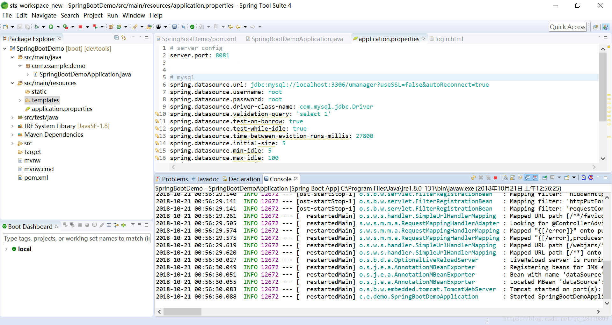
五、SpringBoot+SSM框架整合示例
第一步，建立数据库——这个很重要哦。根据我们在application.properties的配置建立数据库及表，我这里使用了umanager数据库，以及user表，下面贴上我的建库建表语句：
SET FOREIGN_KEY_CHECKS=0;
-- ----------------------------
-- Table structure for user
-- ----------------------------
DROP TABLE IF EXISTS `user`;
CREATE TABLE `user` (
`id` int(11) NOT NULL AUTO_INCREMENT,
`name` varchar(255) NOT NULL,
`password` varchar(255) NOT NULL,
`address` varchar(255) NOT NULL,
PRIMARY KEY (`id`)
) ENGINE=InnoDB AUTO_INCREMENT=3 DEFAULT CHARSET=utf8;
-- ----------------------------
-- Records of user
-- ----------------------------
INSERT INTO `user` VALUES ('1', 'ja', '123', '江苏');
INSERT INTO `user` VALUES ('2', 'BL', '123', '新加坡');第二步，创建BasicController.java（完整的项目目录看最下面）
package com.example.demo.controller;
import org.springframework.beans.factory.annotation.Autowired;
import org.springframework.util.StringUtils;
import org.springframework.web.bind.annotation.GetMapping;
import org.springframework.web.bind.annotation.RestController;
import org.springframework.web.servlet.ModelAndView;
import com.example.demo.model.bean.User;
import com.example.demo.model.dao.UserDAO;
// @RestController = @Controller + @ResponseBody
@RestController
public class BasicController {
@Autowired
private UserDAO userDAO;
@GetMapping(value = "")
public String index() {
return "login"; // 此处表示返回值是一个值为“login”的String。不指向界面的原因是类的注解是@RestController
}
@GetMapping(value = "index.do")
public ModelAndView index2() {
return new ModelAndView("login"); // 此处指向界面
}
@GetMapping(value = "login.do")
public Object login(String name, String password) {
System.out.println("传入参数：name=" + name + ", password=" + password);
if (StringUtils.isEmpty(name)) {
return "name不能为空";
} else if (StringUtils.isEmpty(password)) {
return "password不能为空";
}
User user = userDAO.find(name, password);
if (user != null) {
return user;
} else {
return "用户名或密码错误";
}
}
}这个类使用了User类和注入了UserDAO接口。我们同样创建这两个类：
public class User implements Serializable {
private static final long serialVersionUID = -5611386225028407298L;
private Integer id;
private String name;
private String password;
private String address;
// 省略get和set方法，大家自己设置即可
}package com.example.demo.model.dao;
import org.apache.ibatis.annotations.Mapper;
import org.apache.ibatis.annotations.Param;
import com.example.demo.model.bean.User;
@Mapper
public interface UserDAO {
public User find(@Param("name")String name, @Param("password")String password);
// 注： CRTL+Shift+O，快捷导入所有import
}下面还需要mybatis映射接口到SQL语句的文件，根据application.properties中的配置mybatis.mapper-locations: classpath:mapper/*.xml,在resources文件夹下新建mapper文件夹，下面放入Mybatis的xml文件。
此处写一个UserDAO.xml：
<?xml version="1.0" encoding="UTF-8" ?>
<!DOCTYPE mapper PUBLIC "-//mybatis.org//DTD Mapper 3.0//EN" "http://mybatis.org/dtd/mybatis-3-mapper.dtd" >
<mapper namespace="com.example.demo.model.dao.UserDAO">
<select id="find" resultType="com.example.demo.model.bean.User">
SELECT id, name, password, address from user where name = #{name} and password = #{password}
</select>
</mapper>还需要一个login.html页面，放在resources/templates文件夹下：
<!DOCTYPE html>
<html>
<!-- meta这一句指定编码格式，能够防止中文乱码 -->
<meta charset="UTF-8" />
<head>
<title>登录</title>
</head>
<body>
<form action="/login.do" method="GET">
用户名：<input type="text" id="name" name="name" />
密码： <input type="password" id="password" name="password" />
<input type="button" value="登录" onclick="submit()" />
</form>
</body>
</html>下面，我们来看一下项目目录结构：

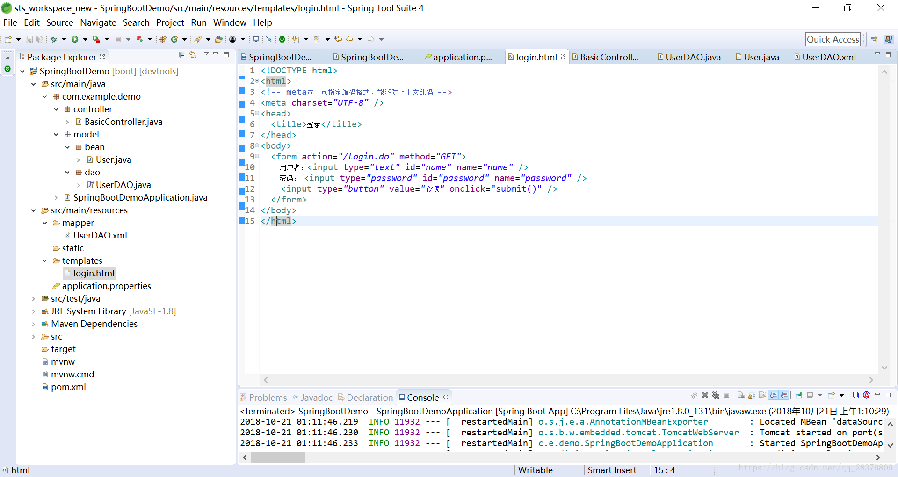
六、启动和测试
到目前为止，我们已经在SpringBoot中整合了SSM框架，下面运行看一下效果。启动Application类后，控制台无错。在浏览器输入：http://localhost:8081/，看到如下界面：
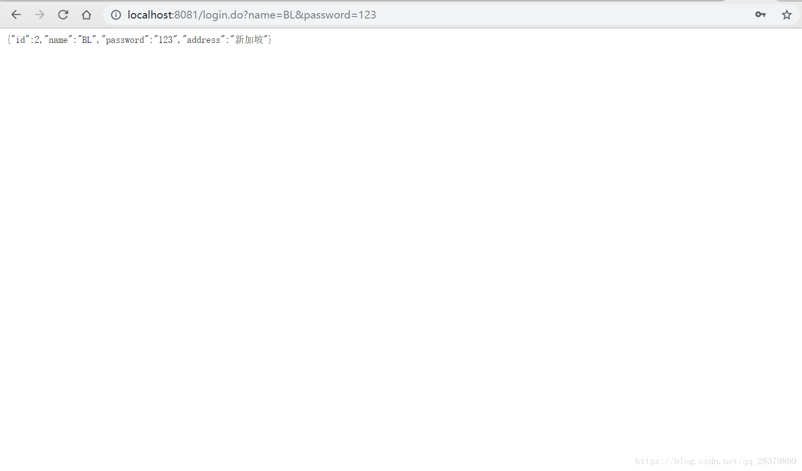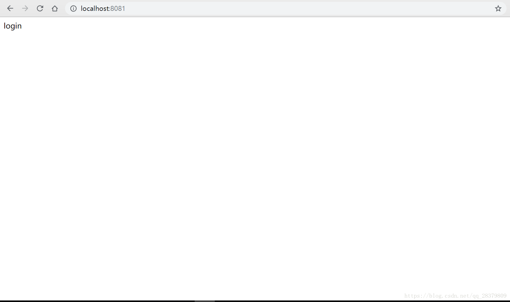
这个login字符串，就是请求http://localhost:8081/经BasicController处理获得的。
下面测试一下登录功能，输入http://localhost:8081/index.do，看到如下界面：
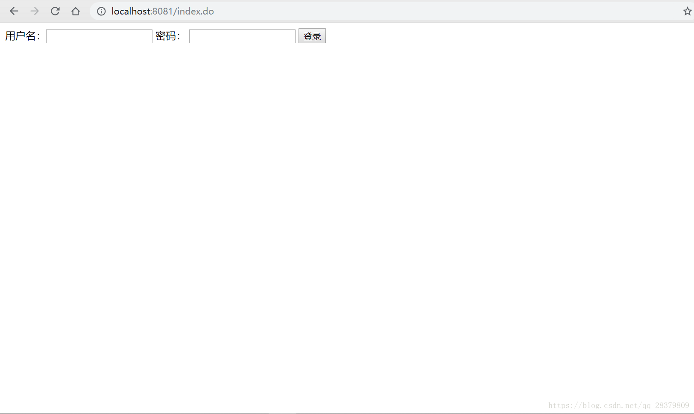
输入你的数据库user表中的一个正确用户，点击登录，获得如下示例数据：
如果输入错误的数据，则：
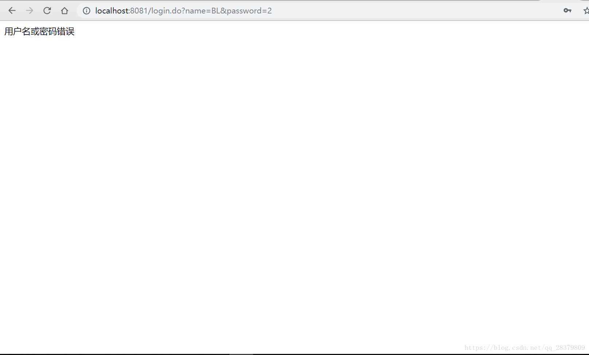
这说明SSM框架已经整合成功了！我们的SpringBoot+SSM第一个示例也就圆满完成！！！